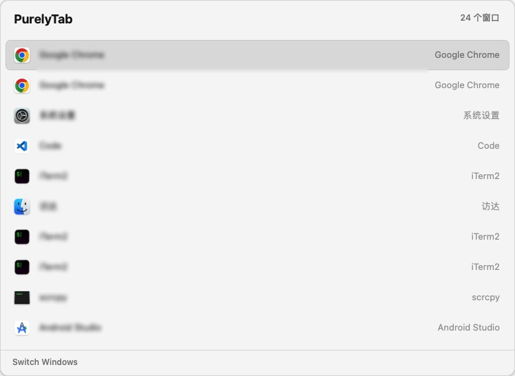
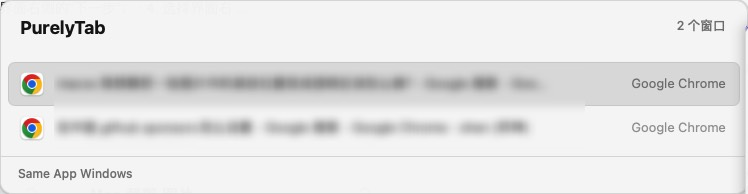
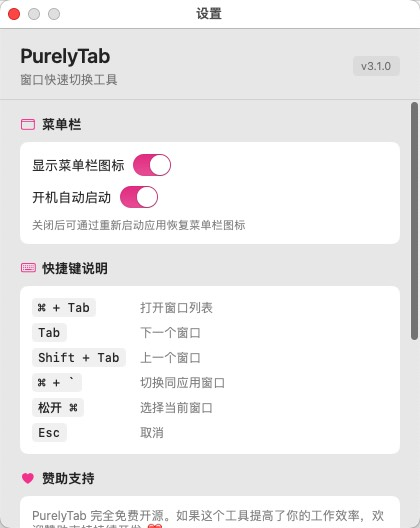
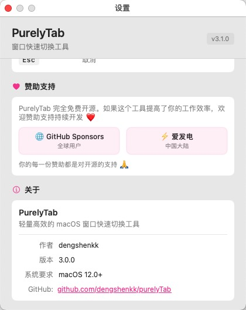

轻量高效的 macOS 窗口切换工具，支持多窗口预览、同应用切换、多主题定制。
纯 Swift 原生 · 免费开源
A fast & beautiful window switcher for macOS. Multi-window previews, same-app switching, customizable themes.
Pure Swift · Free & Open Source
系统原生的 ⌘+Tab 只能切换应用，PurelyTab 让你真正切换窗口。 macOS's ⌘+Tab switches apps. PurelyTab switches windows.
按下快捷键瞬间弹出，零延迟。优化的 AX 缓存架构，性能比同类快 13 倍。Zero delay on trigger. Optimized AX cache delivers up to 13x performance vs alternatives.
⌘+\` 一键切换同一应用的多个窗口，浏览器标签页再多也不怕。⌘+\` cycles through all windows of the current app. Perfect for multiple browser windows.
毛玻璃半透明设计，背景色、选中色、圆角全部自由调整。Translucent design. Background colors, selection colors, corner radius — all adjustable.
跨屏幕无缝切换，支持固定中央或跟随鼠标位置。Seamless across displays. Choose center-position or follow-your-mouse.
原生支持简体中文与 English，自动跟随系统语言设置。Full Chinese & English support. Auto-detects system language.
用 Swift 原生编写，没有 WebView 或 Electron 包袱，资源占用极低。Written in pure Swift. No WebView, no Electron. Minimal resource usage.
简洁直观的界面，上手即用。 Clean and intuitive. Ready to go.




熟悉的操作方式，零学习成本。修饰键也支持 ⌥ 和 ⌃ 自定义。 Familiar shortcuts, zero learning curve. ⌥ and ⌃ also supported.
系统要求：macOS 12.0+，Intel 或 Apple Silicon M 系列芯片。 Requires macOS 12.0+, Intel or Apple Silicon.
📥 下载 DMG → 拖入 Applications → 启动并授权辅助功能 → 按下 ⌘+Tab 开始使用 Download DMG → Drag to Applications → Grant permissions → Press ⌘+Tab
PurelyTab 完全免费开源。如果它提高了你的工作效率，欢迎赞助支持持续开发。 PurelyTab is free and open source. If it boosts your productivity, please consider sponsoring ❤️
每一份赞助都是对开源的支持 🙏 Every sponsorship supports open source 🙏